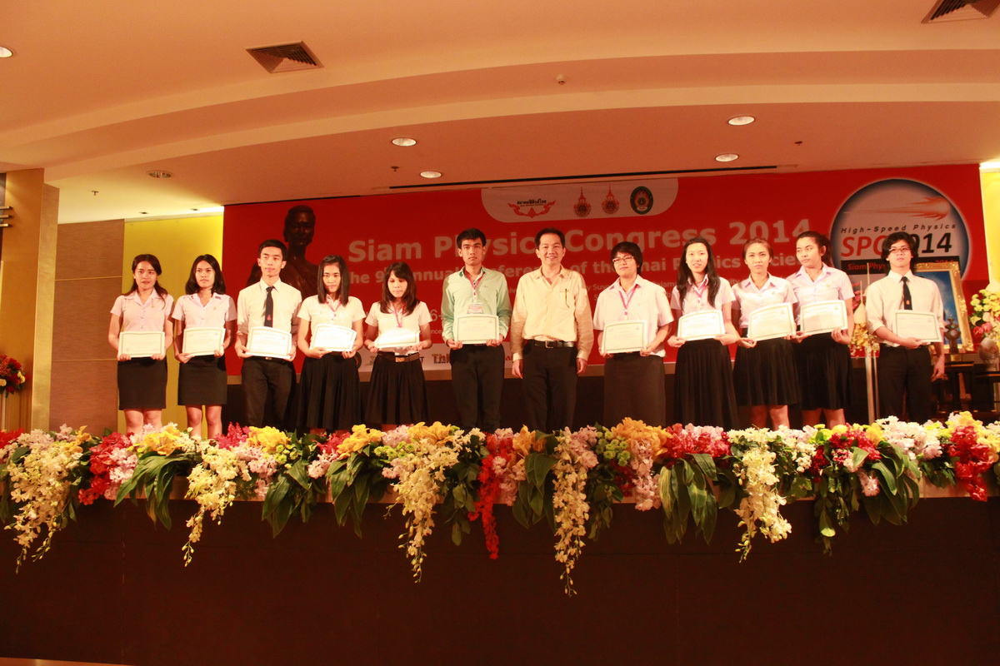

ข่าวนักศึกษา
นักศึกษาคณะวิทยาศาสตร์ มข คว้ารางวัลชนะเลิศ โครงงานค้นคว้าอิสระสาขาฟิสิกส์ ครั้งที่ 7 (SPC2014)

เมื่อวันที่ 26 – 29 มีนาคม 2557 ที่ผ่านมาได้มีการจัดงานการประชุมวิชาการสมาคมฟิสิกส์ไทย ครั้งที่ 9 ประจำปี 2557 (The 9th Annual Conference of the Thai Physics Society Siam Physics Congress 2014: SPC2014) ณ หอประชุมใหญ่ มหาวิทยาลัยเทคโนโลยีราชมงคลอีสาน จังหวัดนครราชสีมา ซึ่งจัดขึ้นภายใต้แนวคิดจัด High-Speed Physics เพื่อสื่อถึงองค์ความรู้ทางด้านฟิสิกส์ที่ได้รับการค้นพบและพัฒนาอย่างต่อเนื่องและรวดเร็ว และเพื่อเป็นการกระตุ้นเตือนนักฟิสิกส์ไทยให้ตื่นตัว มุ่งศึกษา ค้นคว้า พัฒนาองค์ความรู้ใหม่ เพื่อให้ทันความเป็นไปของวงการฟิสิกส์และเทคโนโลยีในระดับโลกโดยมี อาจารย์ นักวิจัย นิสิต นักศึกษา และผู้เกี่ยวข้องทั้งในประเทศและต่างประเทศ ได้มีโอกาสเผยแพร่ผลงานวิจัย แลกเปลี่ยนความรู้ทางวิชาการ สร้างเครือข่าย/ความร่วมมือทางวิชาการระหว่างบุคลากรทางด้านฟิสิกส์ และศาสตร์ที่เกี่ยวข้องทั้งภายในประเทศและต่างประเทศ รวมถึงภาคเอกชน และผู้ที่สนใจทั่วไป เข้าร่วมประชุมเป็นจำนวนมาก และในงานประชุมดังกล่าวได้มีการจัดประกวดคัดเลือกโครงงานค้นคว้าอิสระระดับปริญญาตรีสาขาฟิสิกส์ ครั้งที่ 7 ชิงถ้วยพระราชทานสมเด็จพระเจ้าพี่นางเธอ เจ้าฟ้ากัลยาณิวัฒนา กรมหลวงนราธิวาสน์ราชนครินทร์ โดยสาขาฟิสิกส์ คณะวิทยาศาสตร์ ได้จัดส่งผลงานนักศึกษาระดับปริญญาตรีเข้าร่วมประกวดในครั้งนี้ด้วย ผลปรากฏว่า นายวัฒนา ตุ่ยไชย ได้รับรางวัลรางวัลชนะเลิศอันดับ 1 ในการประกวดโครงงานครั้งนี้ โดยผลงานที่ส่งเข้าประกวดคือ"การสังเคราะห์และสมบัติทางไดอิเล็กตริกของวัสดุนาโนคอมโพสิ9CaCu3Ti4O12 /Au " มี อ.ดร. ประสิทธิ์ ทองใบ เป็นอาจารย์ที่ปรึกษาโครงงาน และมีการมอบรางวัลเมื่อวันที่ 28 มีนาคม 2557 ซึ่งรางวัลดังกล่าวเปิดโอกาสให้นักศึกษาที่จบการศึกษาไปแล้วไม่เกินสองปี ส่งผลงานเข้าร่วมประกวดในครั้งนี้ได้ด้วย ปัจจุบันนายวัฒนา ตุ่ยไชย เป็นนักศึกษาระดับปริญญาโท ชั้นปีที่ 1 สาขาวัสดุศาสตร์และนาโนเทคโนโลยี คณะวิทยาศาสตร์ และยังเป็นนักศึกษาภายใต้ที่ปรึกษาของ อ.ดร. ประสิทธิ์ ทองใบ